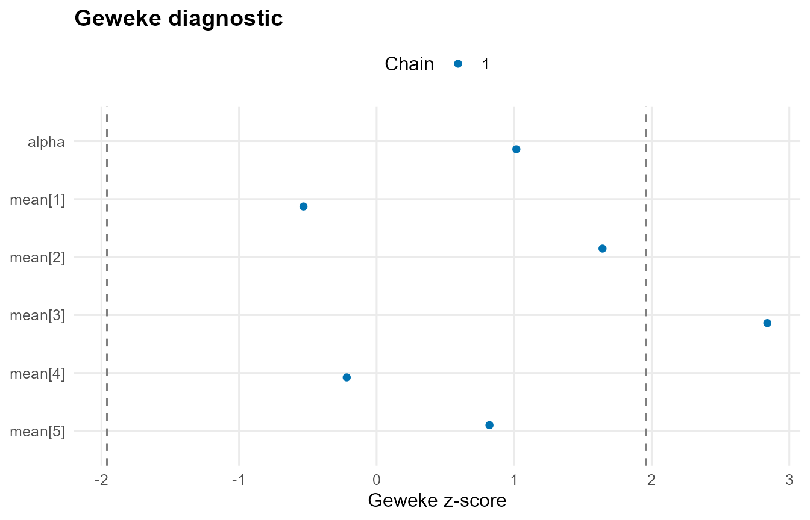

Theory (brief)
The posterior is explored with Markov chain Monte Carlo. Diagnostics summarize mixing and convergence behavior, such as traceplots, effective sample size, and Geweke statistics comparing early vs late chain segments. These checks help ensure that posterior summaries are reliable.
Model Building and Sampling
library(DPmixGPD)
data("faithful", package = "datasets")
y <- faithful$eruptions
bundle <- build_nimble_bundle(
y = y,
backend = "sb",
kernel = "normal",
GPD = TRUE,
components = 6,
mcmc = mcmc
)
fit <- run_mcmc_bundle_manual(bundle, show_progress = FALSE)Model Summary
print(fit)
#> MixGPD fit | backend: Stick-Breaking Process | kernel: Normal Distribution | GPD tail: TRUE
#> n = 272 | components = 6 | epsilon = 0.025
#> MCMC: niter=400, nburnin=100, thin=2, nchains=1
#> Fit
#> Use summary() for posterior summaries; plot() for diagnostics; predict() for predictions.
summary(fit)
#> MixGPD summary | backend: Stick-Breaking Process | kernel: Normal Distribution | GPD tail: TRUE | epsilon: 0.025
#> n = 272 | components = 6
#> Summary
#> Initial components: 6 | Components after truncation: 3
#>
#> WAIC: 733.039
#> lppd: -359.414 | pWAIC: 7.106
#>
#> Summary table
#> parameter mean sd q0.025 q0.500 q0.975 ess
#> weights[1] 0.433 0.081 0.323 0.417 0.597 3.046
#> weights[2] 0.276 0.056 0.162 0.285 0.371 7.301
#> weights[3] 0.192 0.051 0.107 0.197 0.282 4.688
#> alpha 1.281 0.659 0.38 1.273 2.92 16.212
#> tail_scale 2.57 0.086 2.423 2.561 2.689 5.752
#> tail_shape -0.729 0.038 -0.769 -0.749 -0.618 2.31
#> threshold 1.687 0.027 1.664 1.664 1.728 2.389
#> mean[1] 7.592 3.263 3.042 7.262 14.606 23.106
#> mean[2] 7.402 2.658 3.605 7.203 12.746 63.863
#> mean[3] 6.89 2.362 3.702 6.396 12.253 25.889
#> sd[1] 1.782 1.234 0.134 1.418 4.977 5.532
#> sd[2] 1.378 0.783 0.353 1.17 3.432 28.357
#> sd[3] 1.379 0.842 0.199 1.251 3.217 26.071Diagnostic Plots
if (requireNamespace("ggmcmc", quietly = TRUE) && requireNamespace("coda", quietly = TRUE)) {
smp <- fit$mcmc$samples
params <- if (!is.null(smp)) {
cn <- colnames(as.matrix(smp))
cn[1:min(6, length(cn))]
} else {
NULL
}
plot(fit, family = "geweke", params = params)
} else {
message("Plotting requires 'ggmcmc' and 'coda' packages.")
}
#>
#> === geweke ===
Posterior Sample Extraction
if (!is.null(fit$mcmc$samples)) {
s <- fit$mcmc$samples
if (requireNamespace("coda", quietly = TRUE)) {
mat <- as.matrix(s)
dim(mat)
colnames(mat)[1:min(20, ncol(mat))]
} else {
message("Sample extraction requires 'coda' package.")
}
}
#> [1] "alpha" "mean[1]" "mean[2]" "mean[3]" "mean[4]"
#> [6] "mean[5]" "mean[6]" "sd[1]" "sd[2]" "sd[3]"
#> [11] "sd[4]" "sd[5]" "sd[6]" "tail_scale" "tail_shape"
#> [16] "threshold" "w[1]" "w[2]" "w[3]" "w[4]"